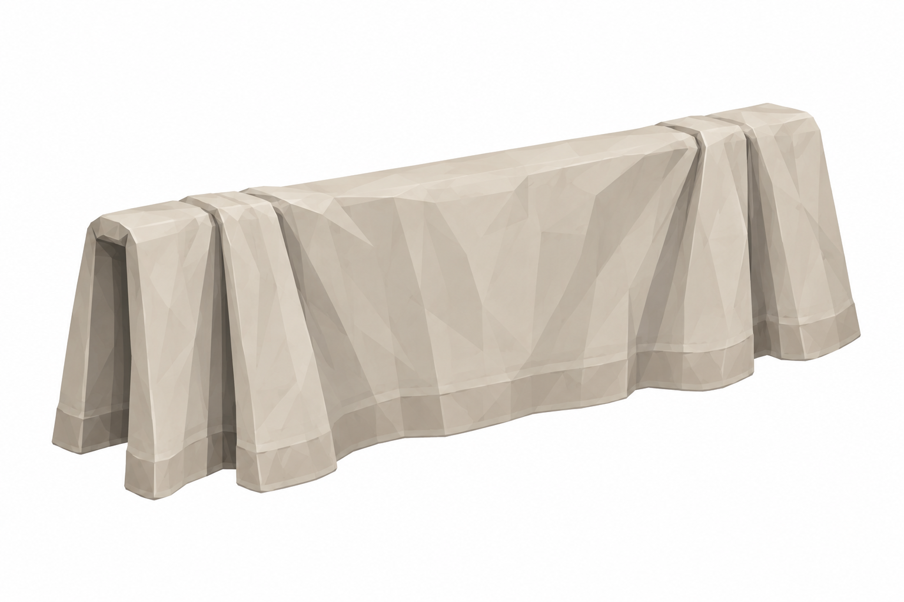
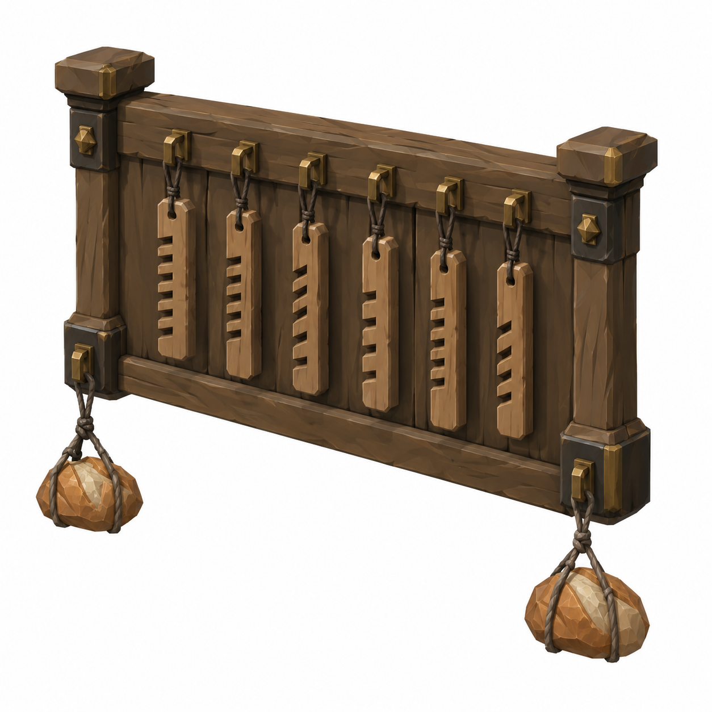

HangingSheet
1.80 ×1.40m flat; folded0.70m drop

Yeni revizyon taslağı; nihai görsel onayı bekleniyor.
Mustafa yorumlarına göre ölçü ve eksik parça taslakları. Onay durumu: yeni görseller kullanıcı ve Mustafa onayını bekliyor.
Kitchen hearth soğuk; warm light table candle. E2Ø5m ring/door→chute lane≥2.5m, racksparallel; scene ölçümü/placement yapılmadı. WardLinen materyal reuse.
Tam ölçüler ve kaynak yorumlar · Ölçekli ölçü zarfı paftası
1.80 ×1.40m flat; folded0.70m drop

Yeni revizyon taslağı; nihai görsel onayı bekleniyor.
1.00 ×0.10 ×0.80m; notchedsticks+loaves

Yeni revizyon taslağı; nihai görsel onayı bekleniyor.
45° ayrı referans, beyaz fon, faceted düz boya. Ölçüler brief hedefidir; raster görselden kesin CAD ölçümü çıkarılmaz. Önceki onaylı dil korunur. Tripo/Unity/rig/placement yapılmadı. Runtime okunurluk, sockets ve fit kontrolleri ilgili lane'de.